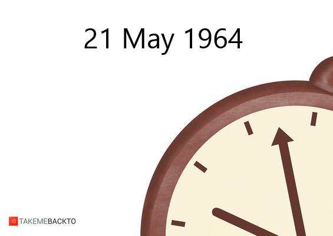
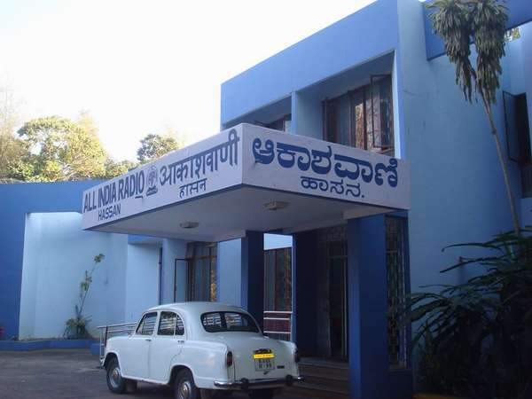
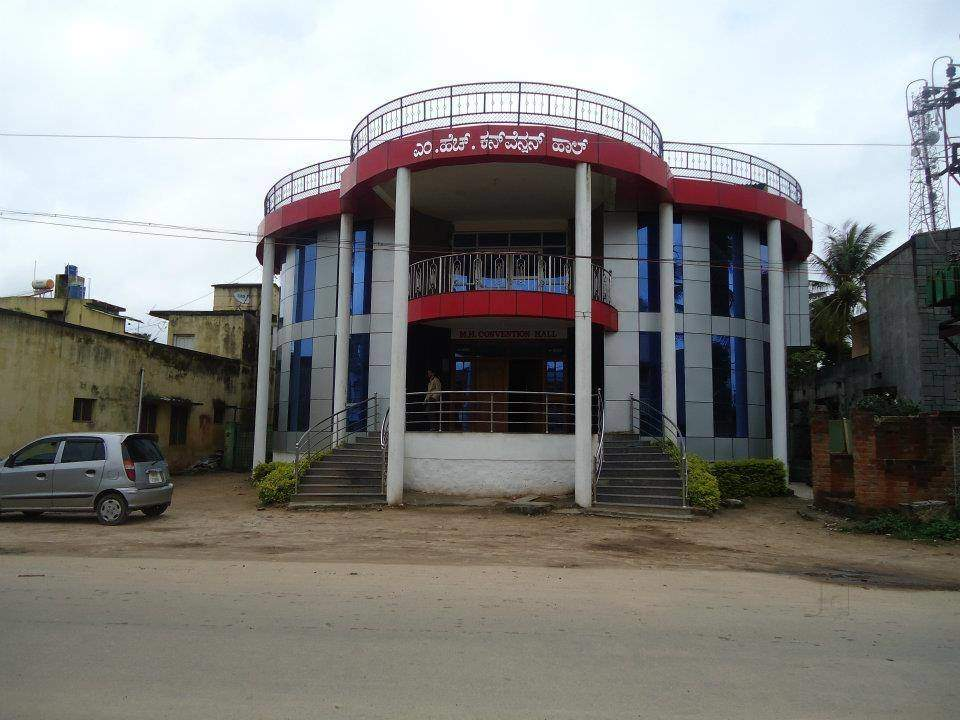

-
Which year did Papa and Mai get married?

-
How many siblings are you guys?
-
What is the name and frequency of the hassan radio station?

-
Pramila aunty is a teacher by profession. Which school is she employed at?
-
Felix uncle visited lobo family to see Noreen aunty in 1991.Which house(area) was it?
Shantinagar

-
Which church were Diana Moushi and Oliver uncle married at?
-
What is the name of the city where Nancy moushi curently resides?
-
Pedru uncle has a big family. How many siblings does he have?
-
Guess the people.
Arvind Kejriwal, Narendra Modi, Rahul Gandhi, Yogi Adiyanath, Amit Shah
-
Which college did Vilma mami study her nursing?
-
What is the name of the hall where Vinnu mama got married?
